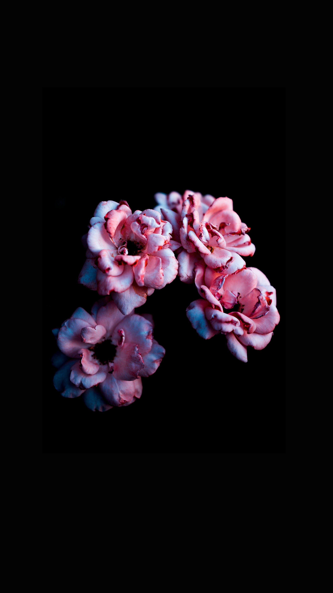
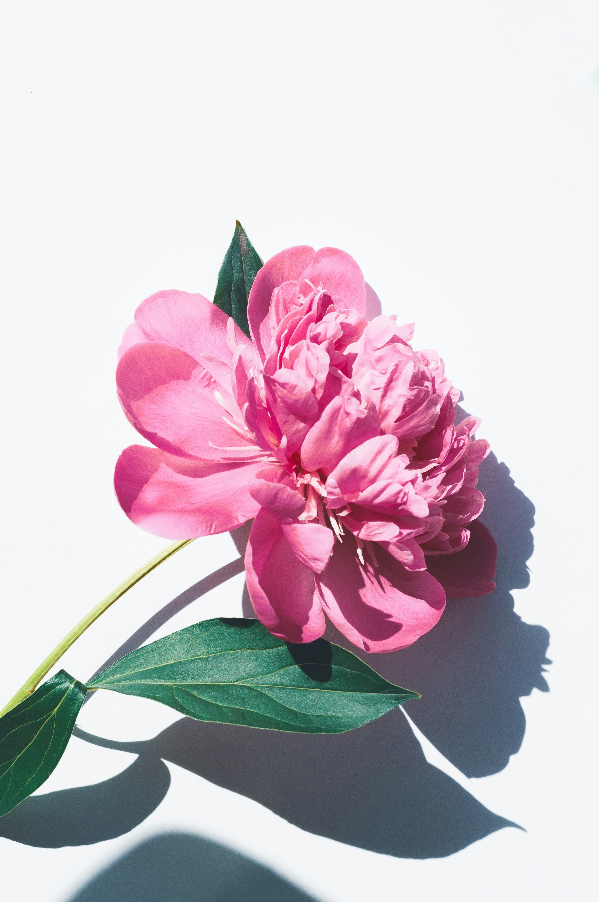

Lavender Flower
A sensory delight, lavender's slender purple spikes and silvery-green foliage exude calm. Its intoxicating herbal fragrance floats above needle-like leaves, attracting bees while repelling pests. This hardy perennial brings both visual charm and aromatic therapy to any garden.
Pink Flower
The quintessential bloom of romance, pink roses embody grace and admiration. Their delicate, layered petals unfold in soft blush tones, releasing a light, sweet fragrance. Symbolizing gentleness and poetic affection, they dance on slender green stems with just a whisper of thorns.
Lilly
Majestic and trumpet-shaped, lilies command attention with their vibrant, freckled petals and heady perfume. These elegant blooms rise tall on sturdy stems, their waxy flowers ranging from pure white to fiery orange. Symbolizing purity and passion, they're nature's living stained glass.